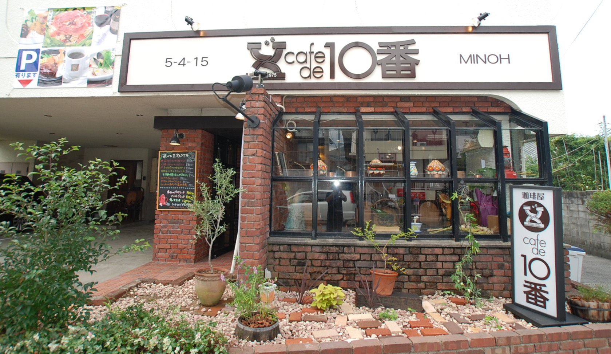
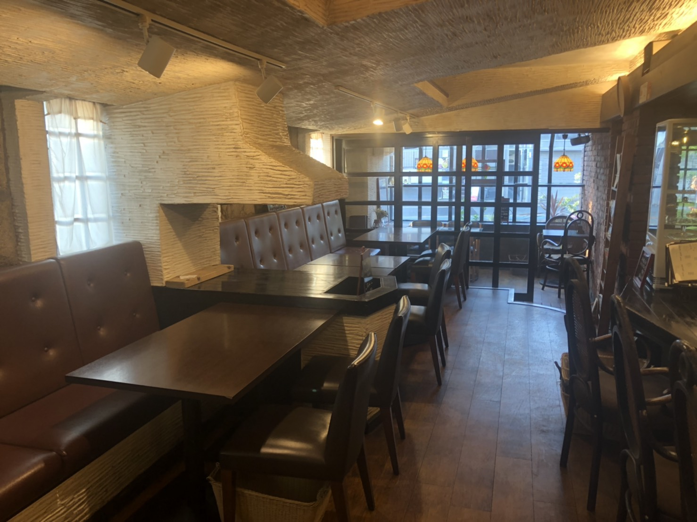
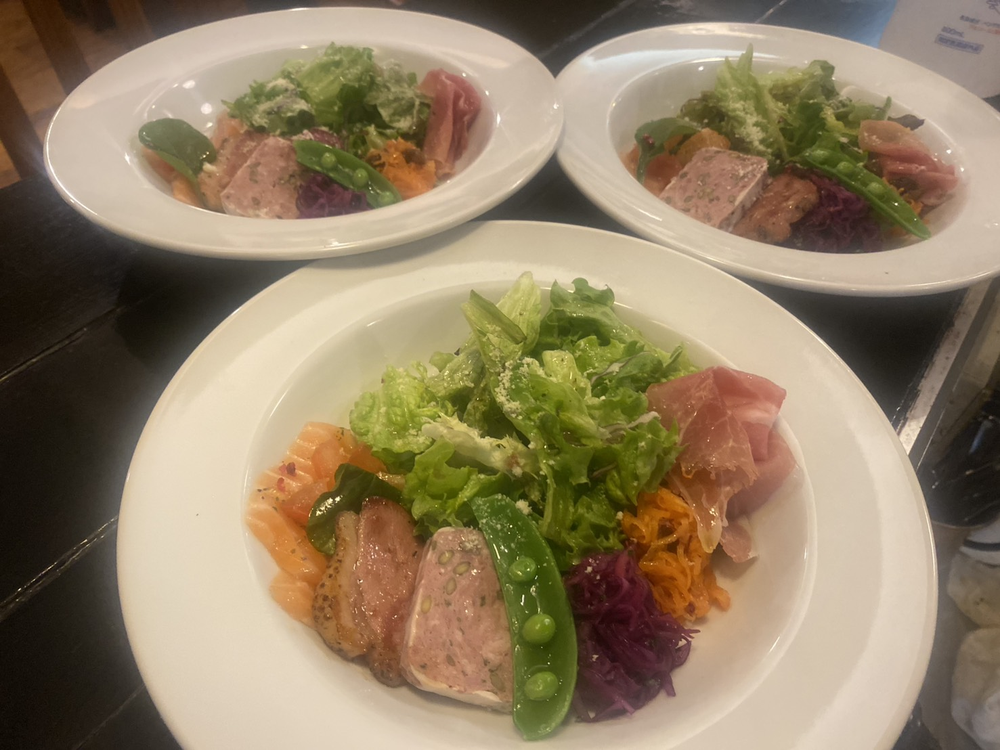
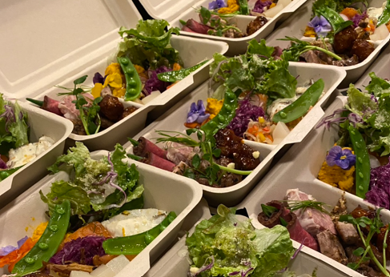
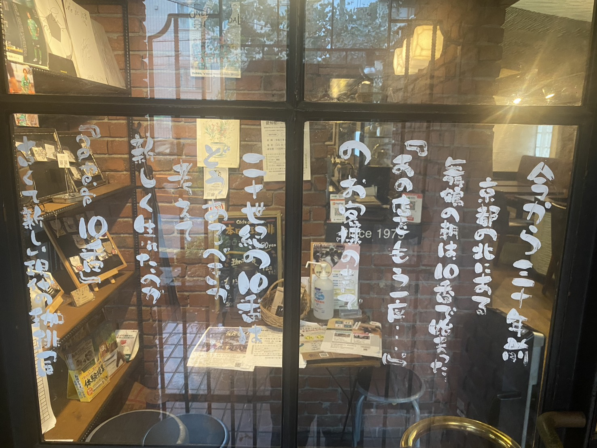
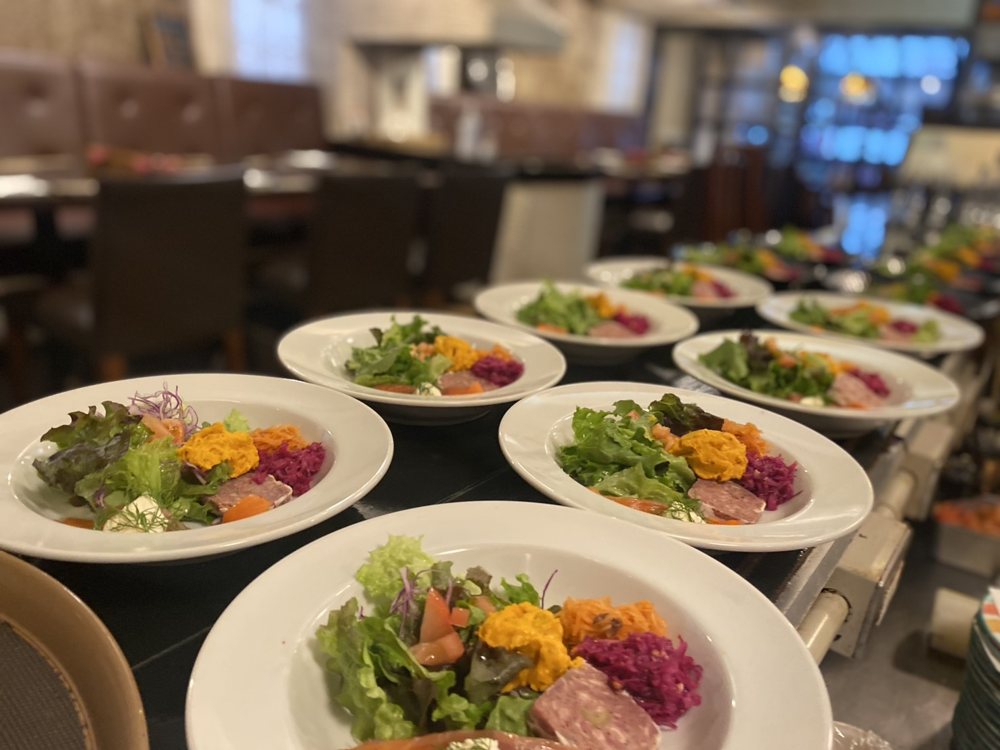
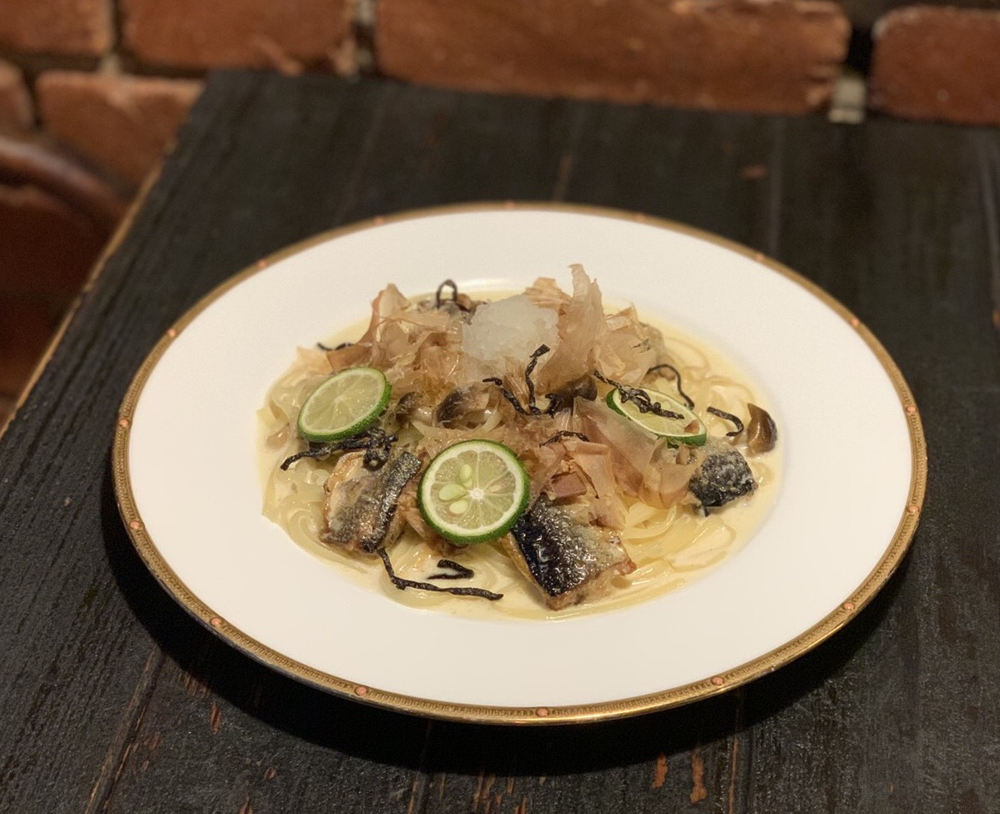
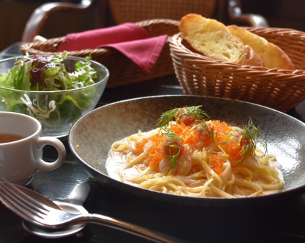

Story
50年の時を超えて

Since
1974
今から50年ほど前…
京都の北にある舞鶴の朝は
『十番館』で始まった
あの店をもう一度…
どこか古くて、そして新しく現代に
『cafe de10番』となり、箕面の地に誕生
オリジナルブレンドコーヒー
1滴1滴、特製のダブルネル（布）で淹れた
コクと旨みを追求したコーヒー
自家製生パスタ
試行錯誤を重ねて作り上げた自家製の生パスタ。素材の旨みを存分に引き出した一皿をご提供します。







Information
店舗情報
店名
cafe de 10番 箕面市役所前
住所
〒562-0003
大阪府箕面市西小路５丁目４−１５
大阪府箕面市西小路５丁目４−１５
電話
営業時間
月
火
木
金
土
日
9:00 〜 20:00
水
9:00 〜 14:00
定休日
毎月10日
詳しい営業日はInstagramをご確認ください
詳しい営業日はInstagramをご確認ください
SNS
Access
アクセス
Contact
お問い合わせ・ご予約
最新情報・メニューはInstagramにてご確認いただけます
@minoh10ban をフォロー